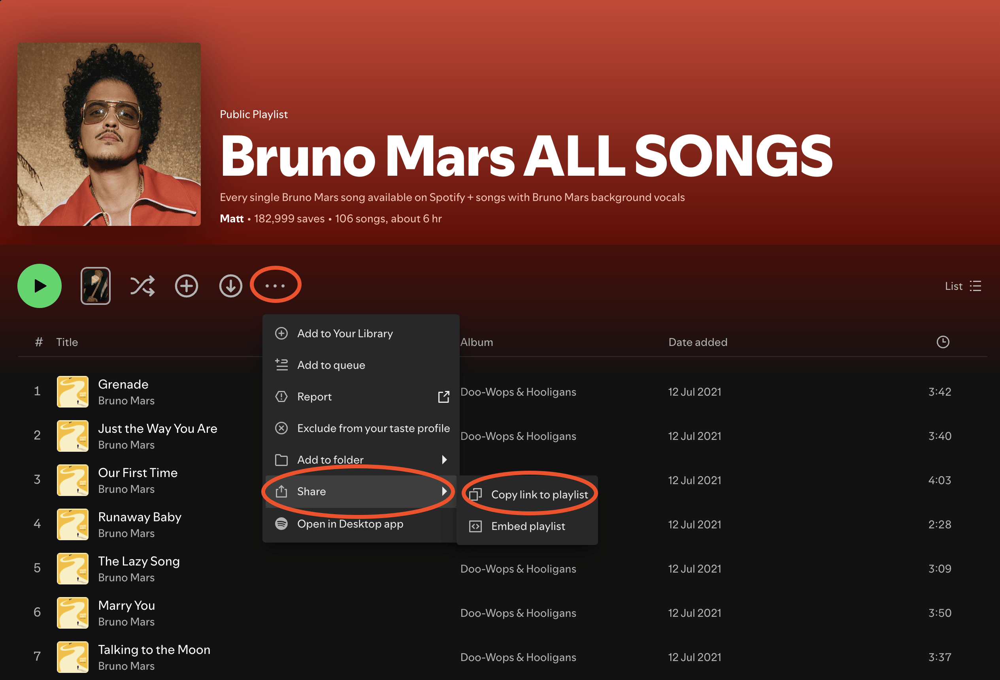
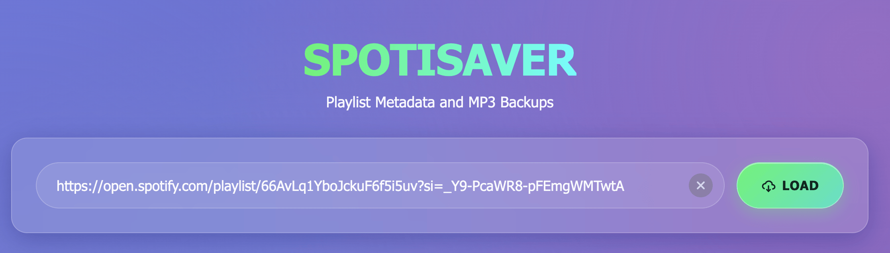
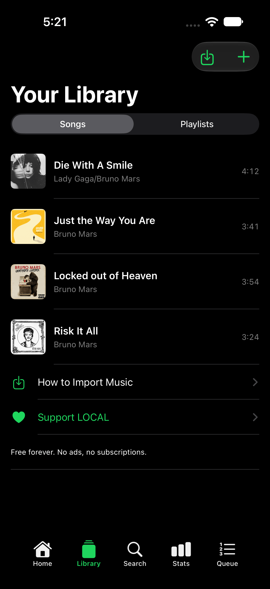
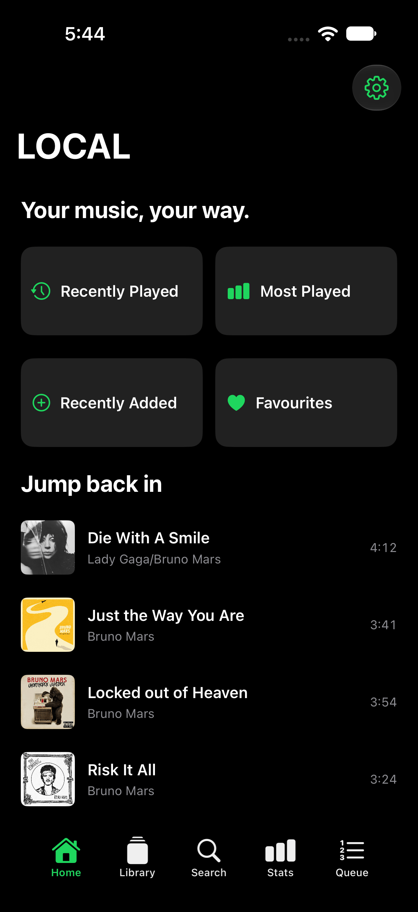

Your music. Your files. All offline.
Find the playlist or track you want in spotify and copy the link.

Put your link in and press load.

Download the songs you want from the website.
download the songs you want and own or have permission to.
Go to your Library, tap the import button in the top corner, then choose Import Audio Files.

Pick your files and LOCAL copies them in, reading the title, artist, album and artwork from each one. Add them to a playlist and you're finished.
